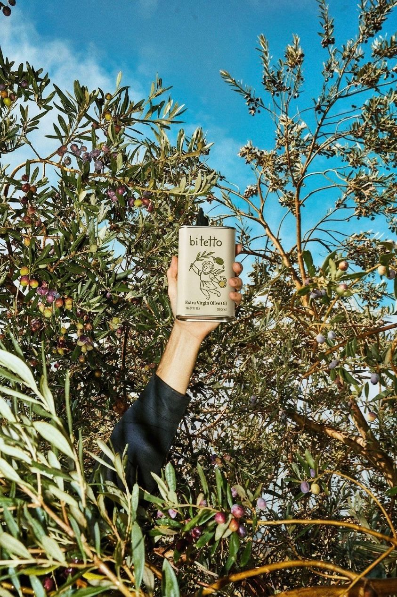
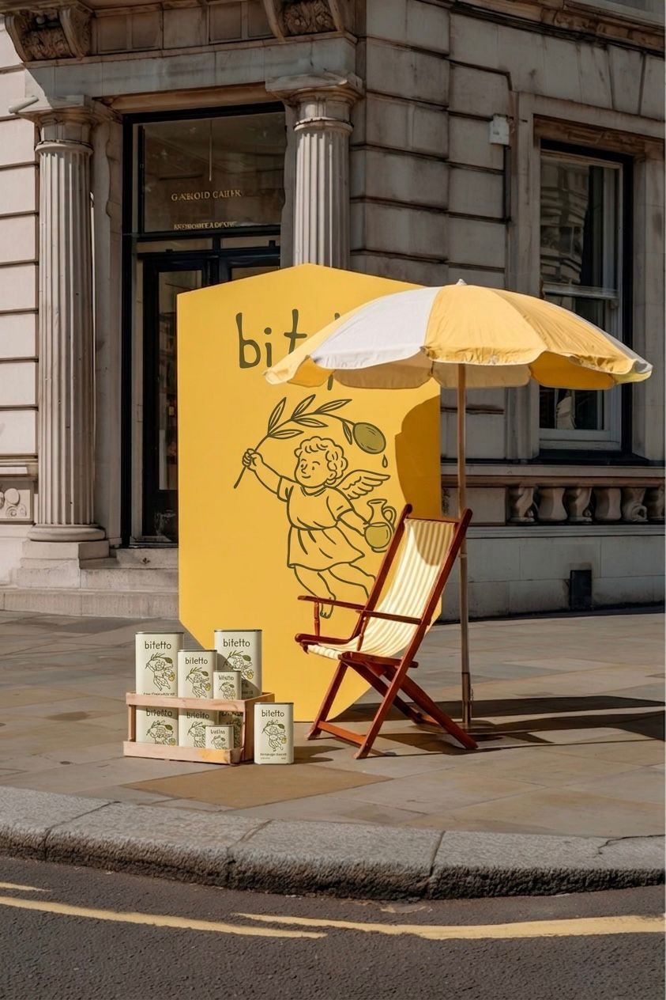

Özümüze
Yolculuk
Zeytinler Köyü'nden sofranıza uzanan bir aile mirası
Zeytinler Köyü'nden sofranıza uzanan bir aile mirası
Her şey, Urla ve Alaçatı’nın tam kalbinde, güneşin altın ışıklarıyla yıkanan Zeytinler köyünde başladı. BiTetto Evi, bizim için sadece bir mekan değil; aile bağlarının paylaşıldığı özel bir sığınaktır.
Ege’nin bin yıllık mirasıyla harmanlanmış has bir zeytinyağı markasının da doğduğu yer burasıdır. BiTetto, köklerimizin bu bereketli topraklara kenetlendiği noktayı temsil eder.

Geleneksel yetiştiriciliğin bilgeliğini, modern kalite standartlarıyla buluşturuyoruz. Memecik cinsi zeytinlerimizi; erken hasat ve soğuk sıkım yöntemleriyle işliyoruz.
Sadece bir gıda üretmiyor; zarafet, sağlık ve sürdürülebilirliği temel alan zamansız bir yaşam kültürünü sofralarınıza taşıyoruz.

Akdeniz’in sunduğu bu "sıvı altın", bebeklerin ilk ek gıdasından mutfaktaki lezzet yolculuğuna kadar hayatın her anına eşlik eder. Yüksek polifenol ve dengeli meyvemsilikle her damlada karakter sunuyoruz.
Doğanın en saf armağanlarından biri olan zeytini, zamansız bir yaşam kültürüne dönüştürmek...
Toprağa saygılı üretim anlayışıyla, organik zeytinyağını yalnızca bir gıda değil; zarafet, sağlık ve
sürdürülebilirliğin simgesi haline getiren öncü bir marka olmak.
Geleneksel zeytin yetiştiriciliğinin bilgeliğini modern kalite standartlarıyla buluşturarak, en saf ve doğal zeytinyağını üretmek. Her damlada toprağın, emeğin ve doğanın uyumunu koruyarak; sofralara yalnızca lezzet değil, gerçek bir yaşam tarzı sunmak.